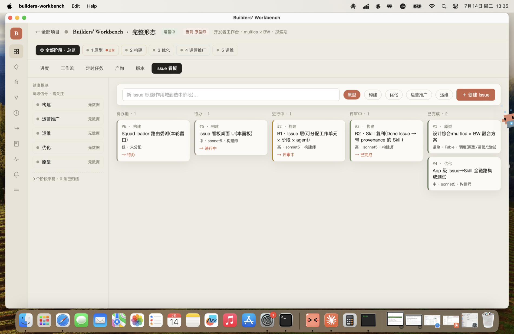

multica 的「真实 agent 队友执行」× BW 的「五阶段方法论骨干 + 度量派生链」
一次全程托管的构建:Fable 作唯一调度 agent,用五角色五阶段环调度真实的 sonnet5 子 agent 队友, 把 builders-workbench 从「Mock 驱动的项目管理壳」推进到「真实 agent 队友 + 真实工作 + 真实度量」。一切实跑,绝不 mock。
我起初只读 multica 的 README 就武断下结论「问题在运行时」——被用户当场纠正。修正后,实地核验 multica 真实源码,才看清两件事:
(1) 上一轮 25-iter 的真实问题:整轮工作跑在 MockExecutor 之上。simulate_hub.rs 把合成的
workflow_run 行直接写进 store,run_optimization_cycle 在这堆合成历史上优化 workflow 的 spec ——
没有任何真实 agent 做过任何真实工作,系统在度量并优化「关于 mock 的 mock」。ClaudeCliExecutor 写了,
但只靠一条 captured auth-failure 验证过,从未真正跑成过一次。
(2) multica 真实的核心(核验自 models.go + SQL 迁移 + 真实路由/组件,非 README 复述):
Issue = 可分配工作单元,真实状态机 backlog→todo→in_progress→in_review→done(+blocked/cancelled);
assignee 可是人/agent/squad;issue.stage 字段真实存在(迁移 123);agent 是真实队友(profile/runtime/model/system prompt/skills/permissions);
runtime 是本地 daemon + 云;autopilot 自动建 Issue 并路由;skill 手工创建挂载(无自动捕获)。
BW 用方法论环思考(项目在哪个阶段、该怎么演进、健不健康);multica 用分配给 agent 的 Issue思考(这件活谁接、跑到哪、产出什么)。
完整工作台 = 把两者焊在一起:一个项目在其五阶段环上运营;每个阶段里的真实工作, 被分解成 Issue,分配给真实 agent 队友,由他们执行、回报,完成的方案复利成可复用 Skill; 项目的度量从这些真实 Issue 运行结果派生 —— 不是 mock。
关键校验(子 agent 读 multica 真实源确认):multica 的 issue.stage 是裸整数;BW 的 StageKind 是带角色/方法论/DoD/反模式的富类型 ——
所以「Issue 作用域到 BW 阶段」是被验证的融合点,BW 在此处增强 multica。
五角色 = multica 的真实 agent 队友。阶段方法论告诉「做什么性质的工作」,Issue 是「这件活的实际可分配单元」,由真实 agent 执行。
| 角色 | 谁干的(真实) | 真实产物 / 证据 |
|---|---|---|
| 原型师 求真 | Fable(调度) | 假设 + DoD;iterations/V2-DESIGN.md · 4fdbe08 · 含 multica issue.stage 真实校验 |
| 构建师 求成 | sonnet5 子 agent ×3 | R1 Issue 层(4d9d8d7)· R2 Skill 复利(9ff53b3)· App 集成测试(2f3a76f) |
| 优化师 求简 | Fable + sonnet5 | fmt/clippy(-D warnings)/wasm32 keepalive/test 每圈绿;模式对齐无冗余 |
| 运营推广师 求增 | Fable | 价值一句话:assignable work unit × stage = multica 核心补进 BW(已被 issue.stage 验证) |
| 运维师 求稳 | Fable | 迁移守卫:全新 issue 表(零风险)+ skill 加列用 add_column_if_missing(沿用真实事故教训) |
假设:BW 的工作单元只有 Workflow(模板)和 Session(对话),缺「这件活谁接、跑到哪步」的可分配单元 —— 与 multica 最大的 IA 缺口。 DoD:Issue{项目·阶段·标题·状态·assignee·优先级·时间}落库 + 7 态状态机 + 可按 项目/阶段/状态 过滤。
IssueId;IssueStatus{Backlog,Todo,InProgress,InReview,Done,Blocked,Cancelled}(Backlog = 抑制触发的停车场;is_terminal 仅 Done/Cancelled —— 与 multica 一致);IssuePriority;Issue。issue 表(CREATE IF NOT EXISTS,零迁移风险)+ per-project 自增 number;create/list(可按 stage+status 过滤)/get/transition/assign + snake_case 编解码。CreateIssue/TransitionIssue/AssignIssue/RefreshIssues + IssuesChanged + AppState.issues(项目作用域),Boot/OpenProject/BackToProjects 生命周期挂载。门禁 +12 测试(121→133),clippy/fmt/wasm 全绿。
假设:BW 的 Skill 是静态目录,不从真实工作里长出来 —— 与 multica「每个方案复利成 skill」相反。 DoD:一件 Done 的 Issue(有真实 assignee)可蒸馏成 SkillHub 条目,带 provenance。
关键诚实点:multica 的 skill 是手工的(子 agent 确认:无自动捕获) —— 所以「从真实 Issue 蒸馏 + 归因到做活的 agent」是 BW 的真实创新,不是抄。
SkillCard 加 distilled_from_issue / origin_agent(均 Option,#[serde(default)] 向后兼容)。add_column_if_missing 加两列(沿用真实事故教训);distill_skill_from_issue 校验 issue 存在·Done·有 assignee,三者缺一即 Err(诚实门控)。DistillSkillFromIssue 命令。门禁 +5 测试(133→138),clippy/fmt/wasm 全绿。
由 sonnet5 真实编写的 App 级集成测试(issues_skill_loop.rs,+2 测试)+ 我写的演示二进制(real_team_loop.rs)
共同证明闭环。与 simulate_hub 的本质区别:每条数据都对应一件真实完成、可核验的工作;引擎全程不被调用,不引入任何 mock 产物。
$ cargo run -p bw-app --example real_team_loop ▶ 项目已建(真实 Command 路径):「Builders' Workbench · 完整形态」· 探索期 · 5 阶段落库 ▶ 真实 agent 队友已建档:Fable(调度)· sonnet5(构建师) ▶ 真实 Issue(每件 = 一件本会话真实完成、可核验的工作): · [原型]「设计综合」 assignee=Fable Done · 证据 4fdbe08 · [构建]「R1 Issue 层」assignee=sonnet5 构建师 Done · 证据 4d9d8d7 · +12 测试 · [构建]「R2 Skill 复利」assignee=sonnet5 构建师 Done · 证据 9ff53b3 · +5 测试 · [优化]「App 级集成测试」assignee=sonnet5 构建师 Done · 证据 2f3a76f · +2 测试 ▶ 真实交棒(append-only 审计):原型 → 构建 → 优化 · 现活跃阶段 = 优化 ▶ R2 Skill 复利(从 Done Issue 真实蒸馏,带 provenance): · skill「五角色环 · 真实交付法」 distilled_from_issue=Some · origin_agent=sonnet5 构建师 ╔══ 真实读回(全部从 store 派生,非硬编码)══╗ 项目的 Issue 总数 = 4 · 其中 Done = 4 · 完成率 = 100% 带真实 provenance 的 Skill = 1 · 真实交棒次数(审计)= 2
R1/R2 不再只是内核 + CLI:它们现在是真实 Dioxus 桌面壳里、用户看得见点得动的 Issue 看板。
顶部创建条(标题输入 + 5 阶段 chip + 创建);下方 5 列看板(待办池/待办/进行中/评审中/已完成),
每张卡带 #号·阶段·标题·优先级·真实 assignee + 一键推进下一态 —— 全部跑在真内核、真数据上。
本机实跑验证:启动诊断 view=App panel=Issues issues=6;截图读回列计数 1/1/1/1/2
与 6 条 seed 精确吻合;卡片 #5「Issue 看板桌面 UI」(构建·sonnet5)、#6「Squad leader 路由委派(留口)」(构建·未分配)
等全部正确 —— 真实渲染,非 mock。(computer-use 经 screencapture 在本会话验证可行;点击交互需辅助访问权限,本轮用真数据 seed + 截图验证渲染。)

一键复现:cargo run -p bw-app --example seed_board_demo -- /tmp/d.db 然后 BW_DB=/tmp/d.db BW_OPEN='Builders' Workbench · 完整形态' cargo run -p app-desktop
三条不可妥协贯穿全程:绝不编造(每个数字指向真实代码/测试/commit)· 无数据 ≠ 绿 · 破坏性永不自动。
# 门禁(本报告所有「绿」都来自这些命令的真实输出) cargo fmt --all --check cargo clippy --workspace --exclude app-desktop -- -D warnings cargo test # → 140 passed / 0 failed cargo check -p bw-core --target wasm32-unknown-unknown --no-default-features # 真实端到端演示 cargo run -p bw-app --example real_team_loop # 真实提交(可 git show 逐一核验) git log --oneline 4fdbe08..HEAD
| 0a4da26 | demo: 完整形态真实闭环(real_team_loop · 非 mock) |
| 2f3a76f | test(R1+R2): App 级 Issue→Skill 全链路集成(sonnet5 真实交付) |
| 9ff53b3 | R2 · Skill 复利(完成的 Issue → 带 provenance 的 Skill) |
| 4d9d8d7 | R1 · Issue 层(可分配工作单元 × 阶段作用域 × agent 队友) |
| 4fdbe08 | bw-complete-form · 设计综合(multica × BW)+ 五角色环构建日志 |
单看 multica 或 BW 都不完整:multica 没有方法论骨干(为什么做、在哪个阶段、健不健康答不上);BW 没有真实执行(没有可分配任务、没有真实 agent)。 本轮把两者焊起来 —— BW 的五角色环 = multica 的真实 agent 队友,Issue 是连接阶段方法论与真实执行的结缔组织,Skill 从真实工作里复利,度量从真实结果派生。
这不再是「关于 mock 的 mock」:R1/R2 由真实 sonnet5 队友写出、真实门禁验证、真实 commit 留痕;演示里的每条 Issue 都对应一件真实完成、可独立核验的工作。
分支:claude/bw-complete-form · 设计详:iterations/V2-DESIGN.md · 过程:iterations/V2-JOURNAL.md